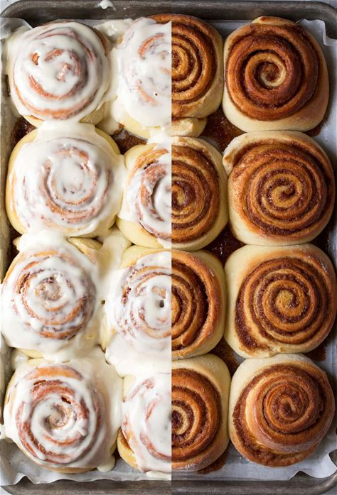
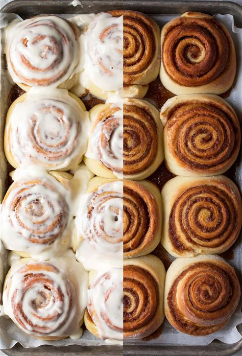
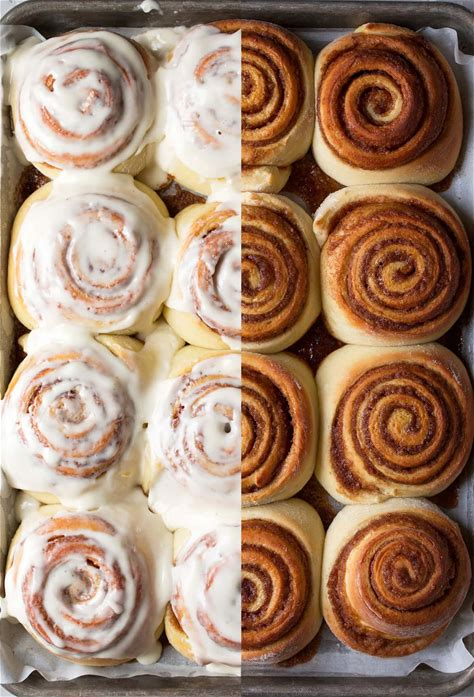

Welcome to the fish website. Everything you need to know about the fish is in this website
This is the html code for the second section and we will start each section with a header tag:
This is the section on the bass fish
Bass fish live in the lakes
The bass fish is a type of fish that lives in
the lakes they are also safe for consumption.
cod-liver oil
can be extracted from
it. It contains high level of lipids which sometumes acts as an antioxidant
This is the practical section where i am going
to practicalise the h1 to h6 below
is the practical lets
use the hello world look down to see
the amazing practical.
Hello world
Hello world
Hello world
Hello world
Hello world
Hello world
It resembles a staircase and is
amazing
please do well to like and share this practical with your friends.
Use it to prank
your friends good-bye for
now.
Aniekeme's Cinnamon Roll Recipe

Ingredients
For the dough:
¾ cup warm milk
2 ¼ teaspoons yeast
¼ cup granulated sugar
1 egg plus 1 egg yolk
3 cups bread flour
For the filling:
2/3 cup dark brown sugar
1 ½ tablespoons ground cinnamon
¼ cup butter
Instructions:
Mix the milk with the yeast, sugar, eggs.
Melt the butter and add to the mixture.
Add in the flour and mix until combined into a dough.
Knead the dough for 10 minuites.
Transfer the dough into a large bowl and cover with plastic wrap. Leave it somewhere to rise for 2 hours.
After the dough has doubled in size, roll it out into a large rectangle.
Melt the butter for the filling and mix in the sugar and cinnamon.
Spread the filling onto the dough then roll the dough into a swiss roll.
Cut the roll into 3cm sections and place flat into a baking tray.
Pre-heat the oven to 350F or 180C, then bake the rolls for 20-25min until lightly brown.
William Blake
william blake
17 south molton street
London
W1K 5QT
UK
William Blake (28 November 1757 – 12 August 1827) was an English poet, painter, and printmaker. Largely
unrecognised
during his life, Blake is now considered a seminal figure in the history of the poetry and visual art of the
Romantic
Age. What he called his "prophetic works" were said by 20th-century critic Northrop Frye to form "what is in
proportion
to its merits the least read body of poetry in the English language".[2] His visual artistry led 21st-century
critic
Jonathan Jones to proclaim him "far and away the greatest artist Britain has ever produced".[3] In 2002, Blake
was
placed at number 38 in the BBC's poll of the 100 Greatest Britons.[4] While he lived in London his entire life,
except
for three years spent in Felpham,[5] he produced a diverse and symbolically rich collection of works, which
embraced the
imagination as "the body of God"[6] or "human existence itself".[7]
Although Blake was considered mad by contemporaries for his idiosyncratic views, he is held in high regard by
later
critics for his expressiveness and creativity, and for the philosophical and mystical undercurrents within his
work. His
paintings and poetry have been characterised as part of the Romantic movement and as "Pre-Romantic".[8] In fact,
he has
been said to be "a key early proponent of both Romanticism and Nationalism".[9] A committed Christian who was
hostile to
the Church of England (indeed, to almost all forms of organised religion), Blake was influenced by the ideals
and
ambitions of the French and American revolutions.[10][11] Though later he rejected many of these political
beliefs, he
maintained an amiable relationship with the political activist Thomas Paine; he was also influenced by thinkers
such as
Emanuel Swedenborg.[12] Despite these known influences, the singularity of Blake's work makes him difficult to
classify.
The 19th-century scholar William Michael Rossetti characterised him as a "glorious luminary",[13] and "a man not
forestalled by predecessors, nor to be classed with contemporaries, nor to be replaced by known or readily
surmisable
successors".[14]
 



 "
"